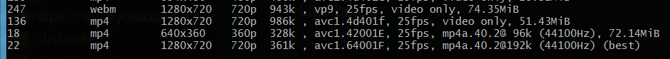

Internet is not 100% reliable thing for everytool, for some you have to deal with the hardway to be on a smooth experience for long.
The Guide of Ubuntu's youtube-dl - link
The best of all guides found so far- https://www.ostechnix.com/youtube-dl-tutorial-with-examples-for-beginners/
$ youtube-dl -f "bestvideo[height<=540]"+bestaudio <URL OF THE PAGE THAT HAS VIDEO>
#Sometimes the extension code are like text so, better select video via height parameter.src: same above link
Info:
If the download is paused, you can do press Enter key or ctrl+c to refresh the currently downloading video or playlist.(hacks)
Download a list of video urls from a give file
$ youtube-dl -a list.txtAbove command will download all the video-urls listed in the list.txt file.
youtube-dl https://www.youtube.com/watch?v=blabla
#automatic merge is done after completion(i.e., audio_only file + video_only file)
youtube-dl --list-subslists all available subtiles for the requested file
Download a particular quality of a video
youtube-dl -F <video-url>
youtube-dl -F 'http://www.youtube.com/watch?v=P9pzm5b6FFY'#note the uppercase letter F option to get the available formats to download. Anything(any format) is either audio only or video only file. SAD.Above command will list all the available quality and formats availabe to download, good thing is that corresponding to every available item, there's a format code(extreme left column). You need to use that format code to download that.
_
Like below:
youtube-dl -f 22 'http://www.youtube.com/watch?v=P9pzm5b6FFY'
youtube-dl -f 394+140 https://www.youtube.com/watch?v=M3BM9TB-8yA
youtube-dl -f 394+249 https://www.youtube.com/watch?v=M3BM9TB-8yA
youtube-dl -f 137+250 https://www.youtube.com/watch?v=HjdJzNoT_qg#note the lowercase letter f option to set the download format code.
#note: 394 is mp4 video only and 140 is m4a audio only. Automatic Mege Succesful.
#note: 394 is mp4 video only and 249 is webm audio only. Automatic Mege Succesful.
#note:137 is for 1080p(mp4), 250 is for webm(68k) audio.
here formats => 18, and 22 includes audio in it too.
Other General Useful options
$ youtube-dl -h will list the help for the program.
// help-text
$ youtube-dl.exe --version
// Output: 2020.03.08
$ youtube-dl -U // will update the program to the latest version.